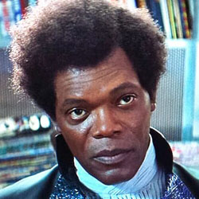
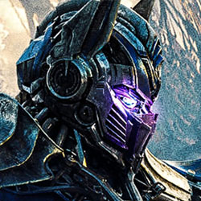

Tabs
Guiding Principles
Tabs should be used to logically separate sets of related options that have equal placement in the hierarchy.
There should be clear visual indicators showing which tab is active and which tabs are not. Part of this
is connecting the content visually to the tab while separating it from the other tabs. (floating tabs
are bad). A page/tool should contain only one row of tabs. A set of tabs should never wrap, and there
should never be sub-tabs.
The content of tabs should load quite quickly as normal usage implies you are not requesting a new page when
clicking one. Tabs can be used for navigation providing that that you follow the previous rules for tab
presentation as well as make it obvious that the tabs are a navigation piece. Tabs are not radio buttons.
Do not use them to select a value or option. (Groups Add Post is good example of this violation.) Tabs
are not progress indicators. Do not use them to track the users progress in a wizard or flow.
Horizontal Tabs

"Your bones don't break, mine do. That's clear. Your cells react to bacteria and viruses differently than mine. You don't
get sick, I do. That's also clear. But for some reason, you and I react the exact
same way to water. We swallow it too fast, we choke. We get some in our lungs,
we drown. However unreal it may seem, we are connected, you and I. We're on the
same curve, just on opposite ends".

A long time ago, far away on the planet of Cybertron, a war is being waged between
the noble Autobots (led by the wise Optimus Prime) and the devious Decepticons
(commanded by the dreaded Megatron) for control over the Allspark, a mystical
talisman that would grant unlimited power to whoever possesses it. The Autobots
managed to smuggle the Allspark off the planet, but Megatron blasts off in search
of it.
"That is seventeen five - your half of the thirty-five thousand. Plus there's an extra
fifteen in there, it's all yours, you've earned it. We made a deal. That's right.
Because I think that we can do business together - we came to an understanding.
Take a look at the money in your hand. Now just imagine making that every week.
That's right. Two pounds a week, thirty-five thousand a pound".

Multiple people have died from Chuck Norris giving them the finger.
Chuck Norris doesn’t need to swallow when eating food. Crop circles are Chuck
Norris' way of telling the world that sometimes corn needs to lie the f*ck down.
Chuck Norris ordered a Big Mac at Burger King, and got one.